{In this section, we strive to understand the ideas generated by the following important questions:
How does the limit definition of the derivative of a function \(f\) lead to an entirely new (but related) function \(f'\)?
What is the difference between writing \(f'(a)\) and \(f'(x)\)?
How is the graph of the derivative function \(f'(x)\) connected to the graph of \(f(x)\)?
What are some examples of functions \(f\) for which \(f'\) is not defined at one or more points?
}
Subsection1.4.1Introduction
Given a function \(y = f(x)\), we now know that if we are interested in the instantaneous rate of change of the function at \(x = a\), or equivalently the slope of the tangent line to \(y = f(x)\) at \(x = a\), we can compute the value \(f'(a)\). In all of our examples to date, we have arbitrarily identified a particular value of \(a\) as our point of interest: \(a = 1\), \(a = 3\), etc. But it is not hard to imagine that we will often be interested in the derivative value for more than just one \(a\)-value, and possibly for many of them. In this section, we explore how we can move from computing simply \(f'(1)\) or \(f'(3)\) to working more generally with \(f'(a)\), and indeed \(f'(x)\). Said differently, we will work toward understanding how the so-called process of “taking the derivative” generates a new function that is derived from the original function \(y = f(x)\). The following preview activity starts us down this path.
Preview Activity
Consider the function \(f(x) = 4x - x^2\).
Use the limit definition to compute the following derivative values: \(f'(0)\), \(f'(1)\), \(f'(2)\), and \(f'(3)\).
Observe that the work to find \(f'(a)\) is the same, regardless of the value of \(a\). Based on your work in (a), what do you conjecture is the value of \(f'(4)\)? How about \(f'(5)\)? (Note: you should not use the limit definition of the derivative to find either value.)
Conjecture a formula for \(f'(a)\) that depends only on the value \(a\). That is, in the same way that we have a formula for \(f(x)\) (recall \(f(x) = 4x - x^2\)), see if you can use your work above to guess a formula for \(f'(a)\) in terms of \(a\).
Subsection1.4.2How the derivative is itself a function
In your work in Preview Activity with \(f(x) = 4x - x^2\), you may have found several patterns. One comes from observing that \(f'(0) = 4\), \(f'(1) = 2\), \(f'(2) = 0\), and \(f'(3) = -2\). That sequence of values leads us naturally to conjecture that \(f'(4) = -4\) and \(f'(5) = -6.\) Even more than these individual numbers, if we consider the role of \(0\), \(1\), \(2\), and \(3\) in the process of computing the value of the derivative through the limit definition, we observe that the particular number has very little effect on our work. To see this more clearly, we compute \(f'(a)\), where \(a\) represents a number to be named later. Following the now standard process of using the limit definition of the derivative,
Here we observe that neither \(4\) nor \(2a\) depend on the value of \(h\), so as \(h \to 0\), \((4 - 2a - h) \to (4 - 2a)\). Thus, \(f'(a) = 4 - 2a\).
This observation is consistent with the specific values we found above: e.g., \(f'(3) = 4 - 2(3) = -2\). And indeed, our work with \(a\) confirms that while the particular value of \(a\) at which we evaluate the derivative affects the value of the derivative, that value has almost no bearing on the process of computing the derivative. We note further that the letter being used is immaterial: whether we call it \(a\), \(x\), or anything else, the derivative at a given value is simply given by “4 minus 2 times the value.” We choose to use \(x\) for consistency with the original function given by \(y = f(x)\), as well as for the purpose of graphing the derivative function, and thus we have found that for the function \(f(x) = 4x - x^2\), it follows that \(f'(x) = 4 - 2x.\)
Because the value of the derivative function is so closely linked to the graphical behavior of the original function, it makes sense to look at both of these functions plotted on the same domain.
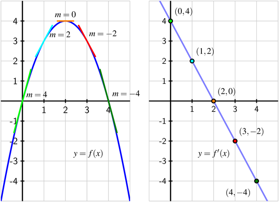Figure1.4.1The graphs of \(f(x) = 4x - x^2\) (at left) and \(f'(x) = 4 - 2x\) (at right). Slopes on the graph of \(f\) correspond to heights on the graph of \(f'\).
In Figure 1.4.1, on the left we show a plot of \(f(x) = 4x - x^2\) together with a selection of tangent lines at the points we've considered above. On the right, we show a plot of \(f'(x) = 4 - 2x\) with emphasis on the heights of the derivative graph at the same selection of points. Notice the connection between colors in the left and right graph: the green tangent line on the original graph is tied to the green point on the right graph in the following way: the slope of the tangent line at a point on the lefthand graph is the same as the height at the corresponding point on the righthand graph. That is, at each respective value of \(x\), the slope of the tangent line to the original function at that \(x\)-value is the same as the height of the derivative function at that \(x\)-value. Do note, however, that the units on the vertical axes are different: in the left graph, the vertical units are simply the output units of \(f\). On the righthand graph of \(y = f'(x)\), the units on the vertical axis are units of \(f\) per unit of \(x\).
Of course, this relationship between the graph of a function \(y = f(x)\) and its derivative is a dynamic one. An excellent way to explore how the graph of \(f(x)\) generates the graph of \(f'(x)\) is through a java applet. See, for instance, the applets at \href{http://gvsu.edu/s/5C}{http://gvsu.edu/s/5C} or \href{http://gvsu.edu/s/5D}{http://gvsu.edu/s/5D}, via the sites of Austin and Renault 1 David Austin, \href{http://gvsu.edu/s/5r}{http://gvsu.edu/s/5r}; Marc Renault, \href{http://gvsu.edu/s/5p}{http://gvsu.edu/s/5p}..
In Section 1.3 when we first defined the derivative, we wrote the definition in terms of a value \(a\) to find \(f'(a)\). As we have seen above, the letter \(a\) is merely a placeholder, and it often makes more sense to use \(x\) instead. For the record, here we restate the definition of the derivative\knownindex{\lt main>derivative\lt /main>\lt sub>definition\lt /sub>}.
Definition1.4.2
Let \(f\) be a function and \(x\) a value in the function's domain. We define the derivative of \(f\) with respect to \(x\) at the value \(x\), denoted \(f'(x)\), by the formula
\(\ds f'(x) = \lim_{h \to 0} \frac{f(x+h)-f(x)}{h},\)
provided this limit exists.
We now may take two different perspectives on thinking about the derivative function: given a graph of \(y = f(x)\), how does this graph lead to the graph of the derivative function \(y = f'(x)\)? and given a formula for \(y = f(x)\), how does the limit definition of the derivative generate a formula for \(y = f'(x)\)? Both of these issues are explored in the following activities.
For each given graph of \(y = f(x)\), sketch an approximate graph of its derivative function, \(y = f'(x)\), on the axes immediately below. The scale of the grid for the graph of \(f\) is \(1 \times 1\); assume the horizontal scale of the grid for the graph of \(f'\) is identical to that for \(f\). If necessary, adjust and label the vertical scale on the axes for \(f'\).
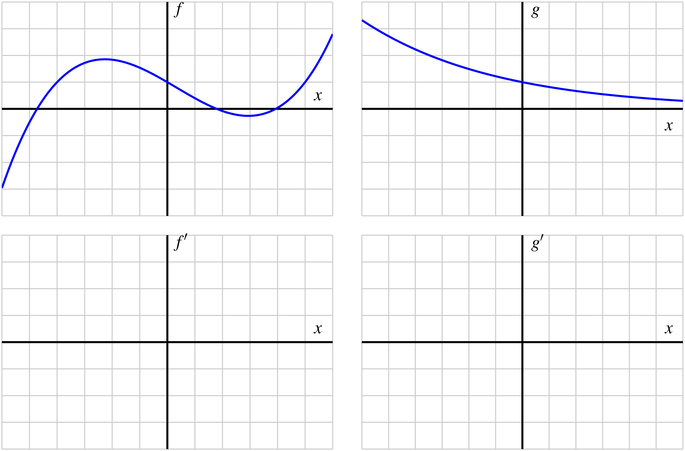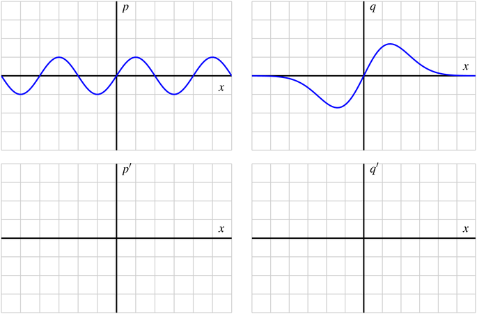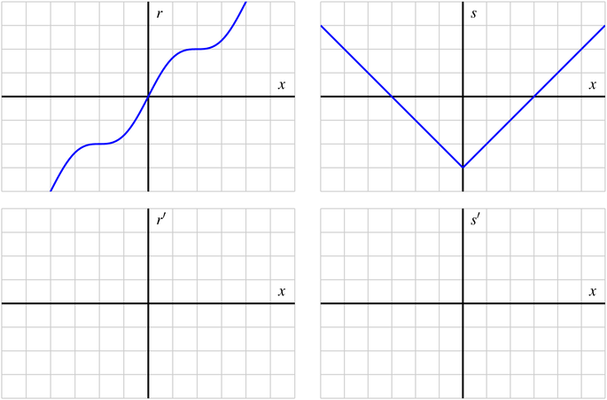
\hspace{4in}
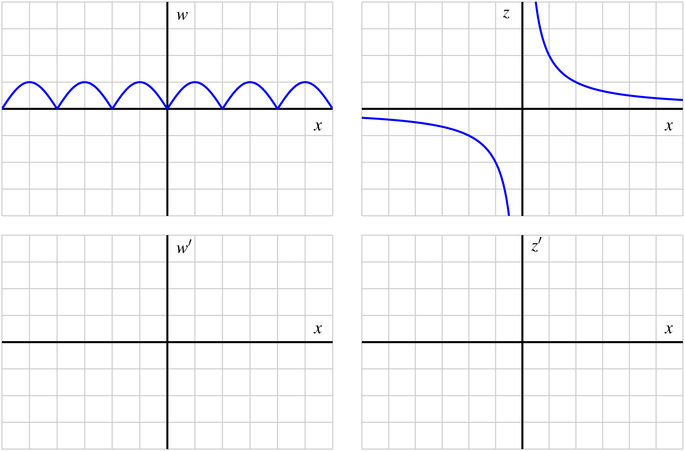
When you are finished with all 8 graphs, write several sentences that describe your overall process for sketching the graph of the derivative function, given the graph the original function. What are the values of the derivative function that you tend to identify first? What do you do thereafter? How do key traits of the graph of the derivative function exemplify properties of the graph of the original function?
HintPoints where the slope of the tangent line is equal to zero are particularly important. Try finding these points first in your effort to plot \(y = f'(x)\) and plotting those zero values on the axes where you'll graph \(y = f'(x)\).HintPoints where the slope of the tangent line is equal to zero are particularly important. Try finding these points first in your effort to plot \(y = f'(x)\) and plotting those zero values on the axes where you'll graph \(y = f'(x)\). After doing so, think carefully as well about the questions: at this point, is \(f'(x)\) positive or negative? is \(f'(x)\) big or small. Use these ideas to help you sketch the derivative graph for the following functions.Solution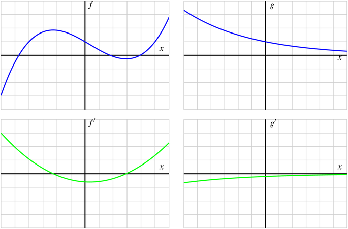 \hspace{4in}
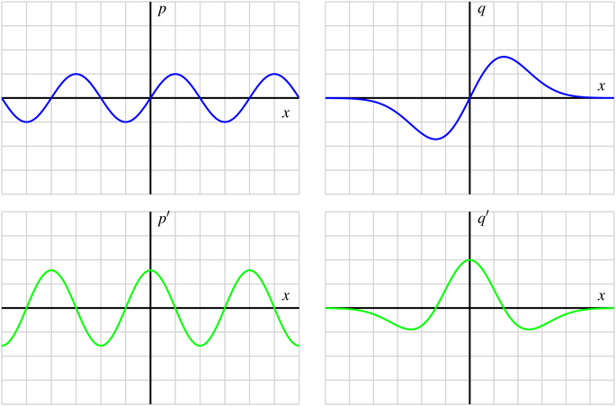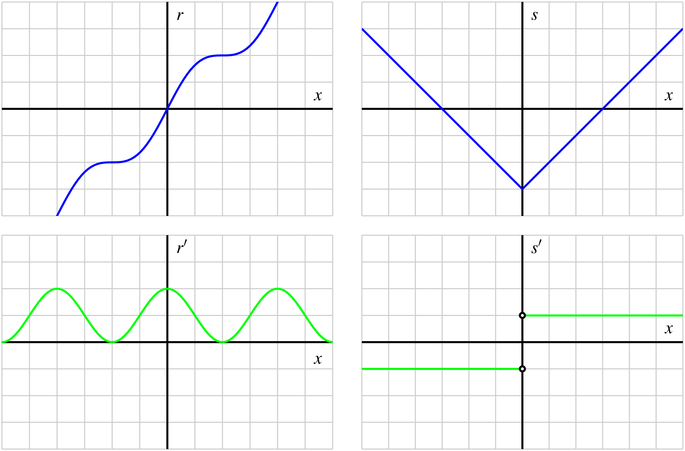 \hspace{4in}
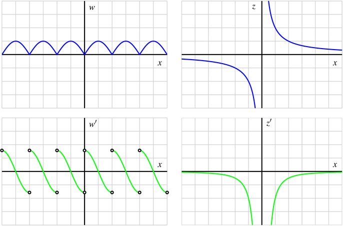
For a dynamic investigation that allows you to experiment with graphing \(f'\) when given the graph of \(f\), see \href{http://gvsu.edu/s/8y}{http://gvsu.edu/s/8y}. 2 Marc Renault, Calculus Applets Using Geogebra.
Now, recall the opening example of this section: we began with the function \(y = f(x) = 4x - x^2\) and used the limit definition of the derivative to show that \(f'(a) = 4 - 2a\), or equivalently that \(f'(x) = 4 - 2x\). We subsequently graphed the functions \(f\) and \(f'\) as shown in Figure 1.4.1. Following Activity 1.4.3, we now understand that we could have constructed a fairly accurate graph of \(f'(x)\) without knowing a formula for either \(f\) or \(f'\). At the same time, it is ideal to know a formula for the derivative function whenever it is possible to find one.
In the next activity, we further explore the more algebraic approach to finding \(f'(x)\): given a formula for \(y = f(x)\), the limit definition of the derivative will be used to develop a formula for \(f'(x)\).
For each of the listed functions, determine a formula for the derivative function. For the first two, determine the formula for the derivative by thinking about the nature of the given function and its slope at various points; do not use the limit definition. For the latter four, use the limit definition. Pay careful attention to the function names and independent variables. It is important to be comfortable with using letters other than \(f\) and \(x\). For example, given a function \(p(z)\), we call its derivative \(p'(z)\).
\begin{authornote}
This is an author note.
\end{authornote}
\item The limit definition of the derivative, \(f'(x) = \lim_{h \to 0} \frac{f(x+h)-f(x)}{h}\), produces a value for each \(x\) at which the derivative is defined, and this leads to a new function whose formula is \(y = f'(x)\). Hence we talk both about a given function \(f\) and its derivative \(f'\). It is especially important to note that taking the derivative is a process that starts with a given function (\(f\)) and produces a new, related function (\(f'\)).
\item There is essentially no difference between writing \(f'(a)\) (as we did regularly in Section 1.3) and writing \(f'(x)\). In either case, the variable is just a placeholder that is used to define the rule for the derivative function.
\item Given the graph of a function \(y = f(x)\), we can sketch an approximate graph of its derivative \(y = f'(x)\) by observing that heights on the derivative's graph correspond to slopes on the original function's graph.
\item In Activity 1.4.3, we encountered some functions that had sharp corners on their graphs, such as the shifted absolute value function. At such points, the derivative fails to exist, and we say that \(f\) is not differentiable there. For now, it suffices to understand this as a consequence of the jump that must occur in the derivative function at a sharp corner on the graph of the original function.
\hrulefill
\begin{exercises}
\item Let \(f\) be a function with the following properties: \(f\) is differentiable at every value of \(x\) (that is, \(f\) has a derivative at every point), \(f(-2) = 1\), and \(f'(-2) = -2\), \(f'(-1) = -1\), \(f'(0) = 0\), \(f'(1) = 1\), and \(f'(2) = 2\).
On the axes provided at left in Figure 1.4.5, sketch a possible graph of \(y = f(x)\). Explain why your graph meets the stated criteria.
On the axes at right in Figure 1.4.5, sketch a possible graph of \(y = f'(x)\). What type of curve does the provided data suggest for the graph of \(y = f'(x)\)?
Conjecture a formula for the function \(y = f(x)\). Use the limit definition of the derivative to determine the corresponding formula for \(y = f'(x)\). Discuss both graphical and algebraic evidence for whether or not your conjecture is correct.
Figure1.4.5Axes for plotting \(y = f(x)\) in (a) and \(y = f'(x)\) in (b).
\item Consider the function \(g(x) = x^2 - x + 3\).
Use the limit definition of the derivative to determine a formula for \(g'(x)\).
Use a graphing utility to plot both \(y = g(x)\) and your result for \(y = g'(x)\); does your formula for \(g'(x)\) generate the graph you expected?
Use the limit definition of the derivative to find a formula for \(h'(x)\) where \(h(x) = 5x^2 - 4x + 12.\)
Compare and contrast the formulas for \(g'(x)\) and \(h'(x)\) you have found. How do the constants 5, 4, 12, and 3 affect the results?
\item Let \(g\) be a continuous function (that is, one with no jumps or holes in the graph) and suppose that a graph of \(y= g'(x)\) is given by the graph on the right in Figure 1.4.6.
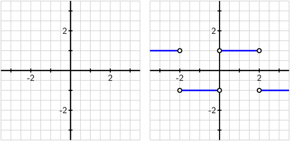Figure1.4.6Axes for plotting \(y = g(x)\) and, at right, the graph of \(y = g'(x)\).
Observe that for every value of \(x\) that satisfies \(0 \lt x \lt 2\), the value of \(g'(x)\) is constant. What does this tell you about the behavior of the graph of \(y = g(x)\) on this interval?
On what intervals other than \(0 \lt x \lt 2\) do you expect \(y = g(x)\) to be a linear function? Why?
At which values of \(x\) is \(g'(x)\) not defined? What behavior does this lead you to expect to see in the graph of \(y=g(x)\)?
Suppose that \(g(0) = 1\). On the axes provided at left in Figure 1.4.6, sketch an accurate graph of \(y = g(x)\).
\item For each graph that provides an original function \(y = f(x)\) in Figure 1.4.7 (on the following page), your task is to sketch an approximate graph of its derivative function, \(y = f'(x)\), on the axes immediately below. View the scale of the grid for the graph of \(f\) as being \(1 \times 1\), and assume the horizontal scale of the grid for the graph of \(f'\) is identical to that for \(f\). If you need to adjust the vertical scale on the axes for the graph of \(f'\), you should label that accordingly.
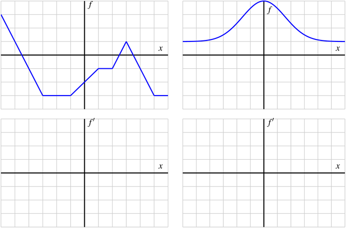 \hspace{4in}
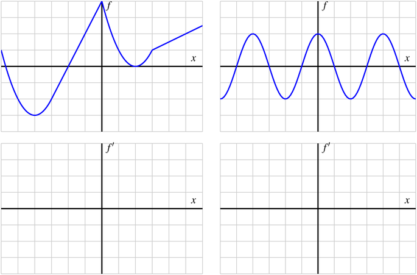Figure1.4.7Graphs of \(y = f(x)\) and grids for plotting the corresponding graph of \(y = f'(x)\).